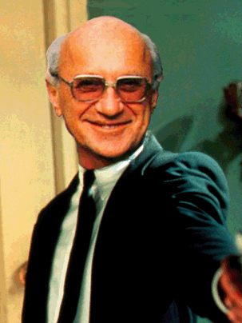

|  |
YAL @ UCSD meets every Wednesday night at 7PM to banter about libertarian politics and philosophy. The meeting location and topic changes every week, so joining our email contacts (below) or facebook group (or getting the number of an officer!) is ideally the best way to find out where we'll be each week. Just fill out the form below to recieve our weekly emails and you're good to go! No dues or obligations necessary.
YAL also meets at 8PM in Porter's Pub every week just after our normal 7PM meeting time.
On certain sunny days we can also be found preaching liberty to students on Library Walk - so stop by our tent, ask us some Milton Friedman trivia, and sign up by hand.
|
|